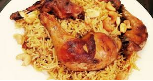

Al Kabsa - Traditional Saudi Rice and Chicken
Saudi Traditional Kabsa

Prep: 40 mins
1 hr 30 Min - Cook time
2 hrs 10 mins - Total
8 Servings
INGREDIENTS
- 1/2
tbsp tablespoon
dried whole lime powder
- 1/2
tbsp tablespoon
ground allspice
- 2
tbsp tablespoon
all-purpose flour
- 1/2
tbsp tablespoon
ground cinnamon
- 1
tbsp tablespoon
onion, finely choppedr
- 1/4
tbsp tablespoon
ground cardamom
- 1/2
tbsp tablespoon
saffron
- 1 (3 pound) whole chicken, cut into 8 pieces
- 1/4
tbsp tablespoon
ground white pepper
- 1 pinch ground cumin
- 1 pinch ground coriander
- 3 1/4 cups hot water
- 1 cube chicken bouillon
- 1/4 cup tomato puree
DIRECTIONS
1. First Step:
- Mix together the saffron, cardamom, cinnamon, allspice, white pepper, and lime powder in a
small bowl, and set the spice mix aside..
2. Second Step:
- Melt the butter in a large stock pot or Dutch oven over medium heat. Stir in the garlic and onion;
cook and stir until the onion has softened and turned translucent, about 5 minutes. Add the
chicken pieces and brown them over medium-high heat until lightly browned, about 10 minutes.
Mix in the tomato puree.
3. Third Step:
- Stir in the canned tomatoes with their juice, the grated carrots, whole cloves, nutmeg, cumin,
coriander, salt, black pepper, and the Kabsa spice mix. Cook for about 3 minutes; pour in the
water, and add the chicken bouillon cube.
4. Fourth Step:
- Bring the sauce to a boil, then reduce the heat to simmer and cover the pot. Simmer until chicken
is no longer pink and the juices run clear, about 30 minutes.
5. Fifth Step:
- Gently stir in the rice. Cover the pot and simmer until rice is tender and almost dry, about 25
minutes; add the raisins and a little more hot water, if necessary. Cover and cook for an
additional 5 to 10 minutes or until the rice grains are separate
USER COMMENTS
LINKS
Search for other Kabsa Rice recipes
Home

Copyright (©) 2020 Saudi's Kabsa
Allrecipes Kabsa Production
All rights reserved